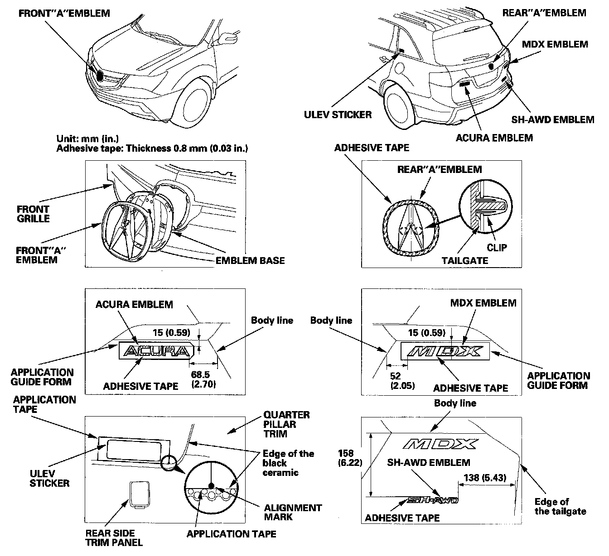

Body Emblem: Service and Repair
Emblem/Sticker ReplacementNOTE: When removing the emblems, take care not to scratch the body.
1. To remove the front "A" emblem, remove the front grille.
2. Clean the body surface with a sponge dampened in isopropyl alcohol. After cleaning, keep oil, grease, and water from getting on the surface.

3. Apply the emblems where shown.
- ACURA/MDX emblems: Remove the adhesive backing. Put the ACURA/MDX emblems with the application guide foam on the tailgate as shown, then press the emblem into place. Remove the film and application guide foam.
- When installing the ULEV sticker on the inside surface of the left quarter glass, align the sticker with the edge of the black ceramic as shown, then press the sticker into place, and remove the application tape.